Anmeldung und Geräte · Persönlich anmelden
Dein persönliches Portal für iPhone und Android. Mit Passkey oder Passwort anmelden. Neu hier? Die Verwaltung gibt dir einen Einrichtungs-QR-Code. H₂O funktioniert direkt im Browser.
Vor „Andere Geräte abmelden“ oder Passkey-Änderungen hier dein aktuelles Passwort eingeben.
Passkeys
Konto
Einmal online öffnen, dann offline nachschlagen.
Meine Nachweise
Mein Deckel
Für einen Spruch antippen
Offen
Alles bezahlt. Danke!
Konto & ZahlungKontostand und Hinweise
Dein Konto
So bezahlst du
Bargeld in die Getränkekasse legen und über „Barzahlung“ eintragen.
PayPal: Namen angeben. Die Verwaltung prüft die Zahlung und schreibt sie danach gut.
Meine Treuepunkte
Deine Treuepunkte
Hier wird Treue flüssig.
Zusatzpunkte mit der Monats-Challenge sammeln.
Punkte einlösen
Monats-Challenge
7 Fragen · 30 Minuten
🚒 Feuerwehr-Wissen
Meine Monats-Challenge
Dein Wissen, sieben Fragen, ein Monatsbonus.
Theater
Mehr
Alle Kacheln liegen in der Hauptnavigation. Verschiebe eine Kachel hierher, wenn du sie unter „Mehr“ ablegen möchtest.
Atemschutz
Nachweisübersicht für Gruppenführer. Sie ersetzt keine persönliche Einsatzfreigabe.
Beim Öffnen werden die Nachweise geprüft.
Ausbildung
Kurzanleitungen für den Feuerwehrdienst
Funk
Bedienung, Status und Sprechfunk für Wasser
Funkgerät
Display verstehen
Handfunkgerät · HRT
MOTOROLA
Unten steht die gewählte Rufgruppe.
Fahrzeugfunk · Bedienhörer
MOTOROLA
Unten steht die gewählte Rufgruppe.
Beispielanzeigen aus euren Unterlagen. Betriebsart und Rufgruppe immer nach Auftrag prüfen.
Motorola · BW
Drücken · Ton abwarten · Sprechen
- Prüfen · Akku, Lautstärke, Betriebsart und Rufgruppe.
- Gruppe prüfen · Angeordnete Betriebsart und Rufgruppe einstellen.
- Sprechen · PTT halten, Freigabeton abwarten.
- Hören · PTT loslassen.
Rote Taste: Funknotruf. Nur nach Einweisung bedienen.
Allgemeine Motorola-Taschenkarte BW · März 2025. Gerätevarianten im Original können abweichen. Örtliche Einweisung gilt.
Original online öffnen ↗FMS-Status
Status · BW
- 1Einsatzbereit über Funk
- 2Einsatzbereit im Gerätehaus
- 3Einsatz übernommen
- 4Am Einsatzort
- 5Sprechwunsch · Antwort abwarten
- 6Nicht einsatzbereit
- 0Dringender Sprechwunsch · kein Notruf
3 → 4 → 1 → 2
Tatsächlichen Fahrzeugzustand melden. Für Sprechwünsche die zugewiesene TMO-Betriebsgruppe wählen.
Weitere Status · 7–9
- 7Einsatzgebunden
- 8Bedingt verfügbar / Abfragewunsch
- 9Quittung / Fremdanmeldung
Verwendung nach örtlicher Einweisung.
Quellen · Baden-Württemberg
Funkbeispiele
Übungsbeispiele · nur nach Absprache. Örtliche Einweisung gilt.
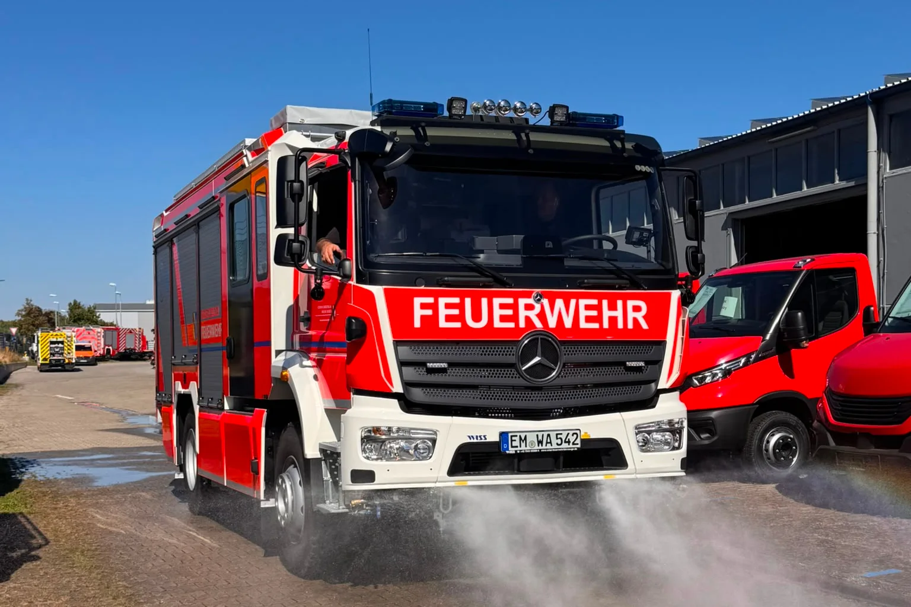
Florian EM 5/42LF10
- LF10
„Leitstelle Emmendingen von Florian Emmendingen 5/42, kommen.“
- Leitstelle
„Hier Leitstelle Emmendingen, kommen.“
- LF10
„Übungsauftrag übernommen, auf Anfahrt zum Übungsort. Kommen.“
- Leitstelle
„Anfahrt verstanden. Kommen.“
- LF10
„Verstanden, Ende.“
Florian EM 5/47TSF
- TSF
„Leitstelle Emmendingen von Florian Emmendingen 5/47, kommen.“
- Leitstelle
„Hier Leitstelle Emmendingen, kommen.“
- TSF
„Am Übungsort eingetroffen. Wasserversorgung übernommen. Kommen.“
- Leitstelle
„Eintreffen und Auftrag verstanden. Kommen.“
- TSF
„Verstanden, Ende.“
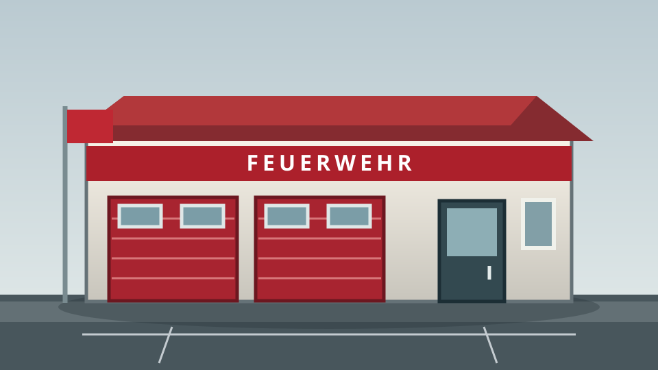
Florian EM 5/100Gerätehaus Wasser
- Gerätehaus Wasser
„Leitstelle Emmendingen von Florian Emmendingen 5/100, kommen.“
- Leitstelle
„Hier Leitstelle Emmendingen, kommen.“
- Gerätehaus Wasser
„Gerätehaus Wasser ist besetzt und erreichbar. Kommen.“
- Leitstelle
„Gerätehaus besetzt, verstanden. Kommen.“
- Gerätehaus Wasser
„Verstanden, Ende.“
Sprechwunsch anmelden, Sprechaufforderung abwarten. Statusmeldungen zusätzlich nach örtlicher Vorgabe. Das Gerätehaus sendet keine Fahrzeugstatus für LF10 oder TSF.
Dienstvorschriften
FwDV zum Nachschlagen
Freiwillige Feuerwehr · Abt. Wasser
Jahresprobenplan
Hellgelb: Ferien · Apricot: Sonntag · Rosa: Geburtstag · Terminfarben nach Art · Feiertage mit Namen
Landkreis Emmendingen
Wasserentnahme aus Gewässern
Pegel Gutach / Elz
Bei einem Abfluss von 1,58 m³/s oder weniger gilt das Entnahmeverbot.
Entscheidend ist der „Abfluss“ im „Tagesmittel am Vortag“. Der aktuelle Messwert und der Wasserstand sind hierfür nicht maßgeblich.
Abfluss und Tagesmittelwert auf NIZ öffnen ↗Öffnet separat. Zum Zurückkehren den neuen Tab schließen oder zurück zum H₂O Portal wechseln.
Für das Verbot zählt weiterhin der NIZ-Tagesmittelwert des Vortags ↗.
Das Verbot betrifft die erlaubnisfreie Wasserentnahme aus öffentlichen oberirdischen Gewässern im Landkreis Emmendingen. Der Rhein ist ausgenommen. Für erlaubnispflichtige Entnahmen gelten gesonderte Regelungen.
Hinweis: Diese Ansicht zeigt den Grenzwert, aber keinen Live-Messwert. Bitte den Tagesmittelwert direkt beim Niedrigwasser-Informationszentrum Baden-Württemberg prüfen.
Quelle: Landratsamt Emmendingen ↗ · Erläuterung zum Tagesmittel ↗
Bundesliga & Pokal
Automatisch bei geöffneter Ansicht
Spiele heute
Bundesliga-Spieltag
| Pl. | Verein | Sp. | Diff. | Pkt. |
|---|
Beim Öffnen wird die Tabelle geladen.
Quelle: OpenLigaDB · Community-Daten, Ergebnisse können verzögert sein. Keine Live-Spieluhr. Pokalspiele erscheinen beim Lieblingsverein, soweit gemeldet.
Konto & Sicherheit
Push-Mitteilungen
Wird geprüftErinnerungen direkt auf dieses Handy.
Hinweise zu Push-Mitteilungen
Auf dem iPhone H₂O über das Home-Bildschirm-Symbol öffnen und Mitteilungen erlauben. Ton und Anzeige stellst du am Handy ein. Bei fünf gespeicherten Geräten bietet die Karte „Push-Verbindungen zurücksetzen“ an: Das betrifft nur Push für dein Konto; auf anderen Geräten danach erneut aktivieren.
App aktualisieren
Portaldaten und App-Version aktualisieren.
Hydrantenplan Wasser
„Plan groß öffnen“ zeigt die PDF zusätzlich in einem eigenen Tab. Zum Zurückkehren den Tab schließen.
Mit zwei Fingern auseinanderziehen zum Vergrößern. Mit einem Finger den Plan verschieben.
Infos
Ansprechpartner Feuerwehr Emmendingen
Festnetz: 7:00–16:00 Uhr · Alternativ per E-Mail
Kontakte werden beim Öffnen geladen.
Internes Verzeichnis · Quelle: OneDrive
Deine Daten
Datenschutz – verständlich erklärt
Dein H₂O Portal begleitet dich auf dem Handy. Hier erfährst du, welche persönlichen Daten genutzt werden und wie dein Zugang geschützt ist.
Welche Daten nutzt dein Portal?
Deine Mitgliedszuordnung, Terminantworten, Getränke und Zahlungen, Punkte sowie je nach Nutzung Challenge-Ergebnisse und Bestellungen. Bei Nachweisen werden Gültigkeiten und Status verarbeitet, keine ärztlichen Befunde.
Wo liegen deine Daten?
Persönliche Portal- und Kontodaten liegen im Cloudflare-Dienst und werden dort verschlüsselt gespeichert. Die Verwaltung gleicht benötigte Angaben mit OneDrive/SharePoint ab. Auf deinem Handy können Zugang, Einstellungen und noch offene Übertragungen gespeichert sein.
Wer kann etwas sehen?
Dein Portal zeigt deine persönlichen Inhalte. Berechtigte Führungskräfte können freigegebene Rückmeldungen und Nachweisübersichten sehen. Die Verwaltung bearbeitet die nötigen Daten; die Theaterkasse sieht Bestellungen mit Namenszuordnung.
Wie ist dein Zugang geschützt?
Die Übertragung erfolgt verschlüsselt (HTTPS). Der Dienst prüft den persönlichen Zugang. Wähle Passkey oder Benutzername und Passwort. Ein Passkey bestätigt deine Anmeldung per Gesicht, Fingerabdruck oder Geräte-PIN. Deine biometrischen Daten bleiben beim Gerät.
Was kannst du selbst tun?
Handy mit einer Displaysperre schützen und persönliche Links und QR-Codes privat halten. Unter „Konto & Sicherheit“ kannst du dich auf diesem Gerät abmelden. Das löscht keine bestätigten Portal- oder Kontodaten beim Dienst. Bei Verlust die Verwaltung informieren.
Was gilt für externe Dienste?
Die Webseite kommt von GitHub Pages; Funktionen nutzen Microsoft, Cloudflare und den eingerichteten Kalender. Fußballinformationen kommen von OpenLigaDB. Die Grundauswahl der Dienstvorschriften wird mit der App von GitHub Pages geladen. Weitere offizielle PDF-Links lädt der Portaldienst beim Öffnen von der Landesfeuerwehrschule Baden-Württemberg. Dabei werden keine Portalzugangsdaten an die Schule weitergegeben. Beim externen Öffnen des Originals erhält die Schule technische Verbindungsdaten deines Browsers. PayPal wird beim Aufruf des Zahlungswegs genutzt, Push-Mitteilungen nach deiner Freigabe. Dabei erhalten die beteiligten Dienste technische Verbindungsdaten. Mitteilungen können auf dem Sperrbildschirm erscheinen.
Was überträgt die Google-Gruppenschnittstelle?
Die private Google-Kalender-Erweiterung der berechtigten Verwaltung erhält für die Gruppenauswahl Namen und technische Mitgliederkennungen sowie Gruppennamen. Beim Anlegen einer Gruppe werden deren Name und die ausgewählten Mitgliederkennungen an H₂O übertragen. Hinzu kommen notwendige technische Verbindungs- und Versionsangaben. Diese begrenzte Schnittstelle überträgt keine ärztlichen Atteste, medizinischen Nachweisgültigkeiten, Gesundheitsdaten oder Geburtstagsdaten. Sie erhält keinen Zugriff auf Mitgliedskonten oder Terminantworten. Mitgliedernamen werden nicht in die öffentliche Google-Terminbeschreibung geschrieben. Jede Verbindung lässt sich einzeln sperren.
Welche Daten nutzen die übrigen Schnittstellen?
Der Google-ICS-Import liest die im Quellkalender vorhandenen Termine, einschließlich dort eingetragener Geburtstage, für H₂O und die Treuepunkte. Die Google-Terminbearbeitung verarbeitet Titel, Zeiten, Ort und Beschreibung; die Farbanbindung verwendet Kalenderkennung, Zeitraum sowie Termin- und Farbangaben. Diese Kalenderfunktionen übertragen keine ärztlichen Atteste oder medizinischen Nachweise aus der Mitgliederverwaltung an Google. Der geschützte Abgleich zwischen Verwaltung, OneDrive/SharePoint und Cloudflare benötigt dagegen Mitgliederdaten, Rollen und Nachweisgültigkeiten für die H₂O-Funktionen; ärztliche Befunde sind kein Feld dieses Nachweisabgleichs. Das persönliche Kalenderabo enthält die freigegebenen eigenen Termine und den zugeordneten eigenen Geburtstag.
Datenschutz & Sicherheit
H₂O selbst ist nicht zertifiziert. Anbieter-Nachweise gelten nur für die darin genannten Dienste, Vertragsangebote und Zeiträume. Wir verwenden keine fremden Prüfsiegel. Stand der Links: 27.10.2026.
Cloudflare · Portaldienst
Workers und D1 führen die zentralen Funktionen und geschützten Daten. Der Anbieter veröffentlicht Prüfberichte; der konkrete Geltungsbereich muss im jeweiligen Nachweis geprüft werden.
Offizielle Nachweise von CloudflareGoogle · Kalender
Der freigegebene Feuerwehrkalender liefert Termine. Derzeit ist die ICS-Quelle öffentlich: keine privaten Mitgliederdaten, Nachweise oder Zugangsdaten in die Beschreibung eintragen. Workspace-Zertifikate werden hier nicht als Nachweis für einen privaten Google-Kalender ausgegeben.
Google: Sicherheit und DatenschutzMicrosoft · Geschützte Dokumente
OneDrive und SharePoint speichern Verwaltungsdokumente. Der Zugriff erfordert die eingerichteten Microsoft-Berechtigungen. Microsoft-365-Nachweise gelten nur für die jeweils aufgeführten Produkte und Vertragsangebote; sie belegen nicht automatisch den Schutz eines privaten OneDrive-Kontos.
Microsoft: Geltungsbereiche und NachweiseGitHub · Öffentlicher Programmcode
GitHub Pages liefert die Anwendung. Der Programmcode ist öffentlich; Mitgliederdatensätze und Geheimnisse gehören nicht hierher. Enterprise-Testate werden nicht pauschal als Zertifizierung dieser kostenlosen Webseite dargestellt.
GitHub: offizielle Compliance-BerichteDas persönliche H₂O-Kalenderabo benötigt keine Kalender-E-Mail-Adresse. Der zufällige Abo-Link erlaubt ausschließlich lesenden Zugriff auf die eigenen Termine. Apple, Google oder die gewählte Kalender-App erhalten diesen Link und die betreffenden Termindaten beim Abonnieren, einschließlich des eigenen Geburtstagstermins, sofern er zugeordnet ist. Das persönliche Kalenderabo ist ein anderer Datenweg als die begrenzte Google-Gruppenschnittstelle. Link nicht weitergeben; Zurücksetzen sperrt zukünftige Abrufe mit dem alten Link. Bereits beim Anbieter oder Gerät gespeicherte Daten werden dadurch nicht zurückgerufen. Normale H₂O-Nutzung benötigt keine Google-Anmeldung. Bei Datenkorrektur, Löschwunsch oder Zugangsverlust hilft die Verwaltung unter den oben genannten Kontakten. Daten werden nur so lange benötigt aufbewahrt; gesetzlich erforderliche Feuerwehrberichte können länger aufzubewahren sein. Eine externe Prüfung des gesamten Portals bleibt eine spätere, gesondert freizugebende Option.
Schritt für Schritt
Anleitung mit Originalansichten
Thema aufklappen. Die Bilder stammen aus deinem H₂O Portal und zeigen ausschließlich Beispieldaten. „Bild vergrößern“ öffnet die Originalansicht in einem neuen Tab.
H₂O Portal · Dein HandyRückmeldungen, Nachweise, Deckel, Sicherheit und Jahresplan
H₂O einmal auf dem Handy einrichten
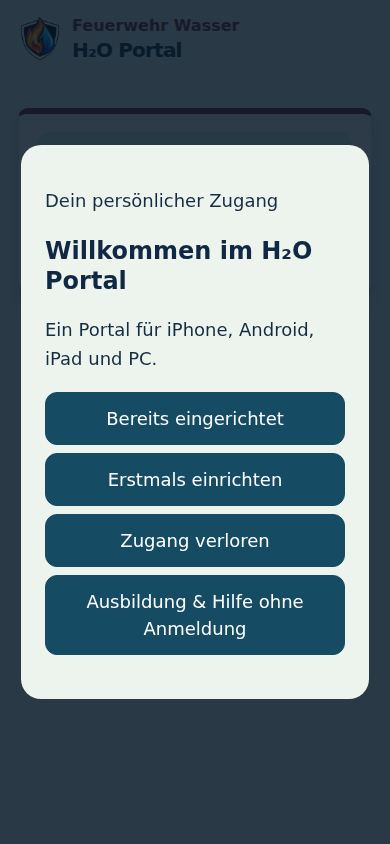
- Persönlich freigeben lassen
Die Verwaltung prüft deine Identität und zeigt dir deinen Einrichtungs-QR-Code. Mit der normalen Handykamera scannen und in Safari oder Chrome öffnen. Die Freigabe ist einmalig und 10 Minuten gültig. Nicht weitergeben.
- Eigenen Zugang einrichten
Nach dem Öffnen des QR-Links erscheint direkt die Auswahl zwischen Passkey und Passwort. Die Freigabe wird automatisch übernommen; keinen Code erneut eingeben. Ohne Einrichtungs-QR kann die Freigabe weiterhin manuell eingegeben werden. „Andere Freigabe verwenden“ öffnet bei Bedarf eine neue Eingabe. Danach mit diesem Zugang anmelden. Ein vergessener Zugang wird über die Verwaltung wiederhergestellt.
- Auf Wunsch ein Startsymbol anlegen
H₂O funktioniert direkt im Browser. Optional hilft „H₂O-Symbol auf dem Handy“ vor der Anmeldung und unter „Konto & Sicherheit“ bei der Einrichtung: iPhone in Safari über Teilen → Zum Home-Bildschirm hinzufügen; auf Android in Chrome eine Startbildschirm-Verknüpfung erstellen. Keine APK aus anderen Quellen installieren und bei einer Play-Protect-Warnung im Browser bleiben. Falls das Symbol erneut eine Anmeldung zeigt, den vorhandenen Passkey oder das Passwort verwenden – keine neue Freigabe nötig.
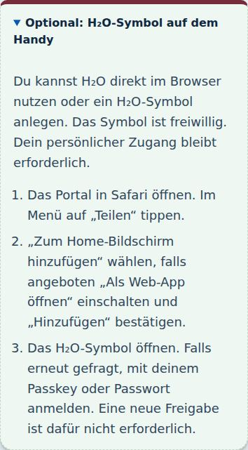
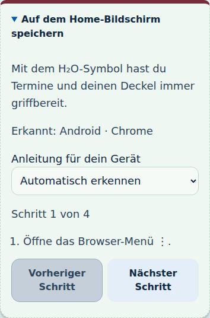
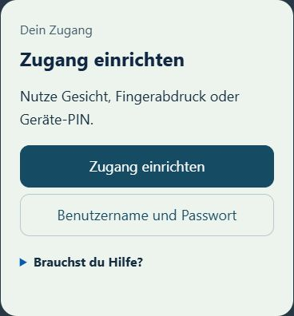
Eine gemeinsame Web-App für iPhone und Android, ohne Store-Download oder TestFlight-Frist. Die persönliche Anmeldung entscheidet über den Datenzugang. Das Startsymbol ist freiwillig. Beim Gerätewechsel oder Verlust hilft die Verwaltung.
Termine im Kalenderabo und Rückmeldung über H₂O
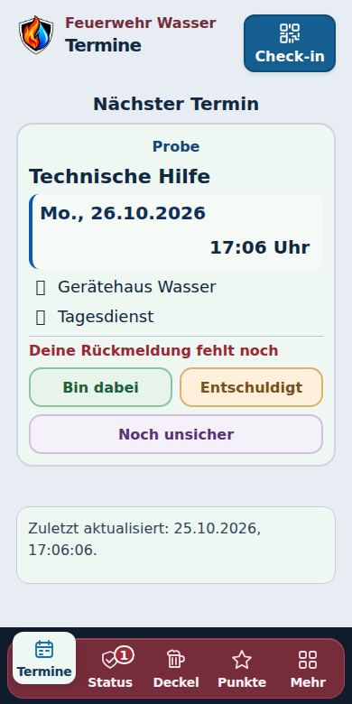
- Feuerwehrkalender abonnieren
Unter Daten und Sicherheit auf Feuerwehrkalender abonnieren tippen. Der persönliche Abo-Link ist bereits hinterlegt. Apple Kalender oder Google Kalender auswählen und dort einmal bestätigen. Alternativ den Abo-Link kopieren und als Kalenderabonnement hinzufügen. Google Kalender bei Bedarf am Computer öffnen und Weitere Kalender → + → Per URL wählen. Das Abo heißt H₂O – Meine Feuerwehrtermine und enthält nur die dir in H₂O angezeigten kommenden Termine. Ein bisheriges Hauptkalender-Abo mit allen Terminen entfernen, wenn nur diese Auswahl gewünscht ist. Ein bereits vorhandenes persönliches H₂O-Abo nicht erneut hinzufügen. Es werden keine zusätzlichen persönlichen Einladungen mehr erstellt. H₂O ergänzt automatisch in jedem abonnierten Termin den Link H₂O-Rückmeldung zur persönlichen Antwortseite. Kalenderabos übernehmen Änderungen zeitversetzt.
- Link im Termin öffnen
Im persönlichen Kalenderabo den Termin und den automatisch enthaltenen Link „H₂O-Rückmeldung“ öffnen. Der Link enthält nur die Termin-ID. Bei Bedarf mit dem eigenen H₂O-Passkey oder Passwort anmelden. Die Antwort erfolgt auf der geöffneten H₂O-Terminseite. Fremde oder nicht freigegebene Termine werden serverseitig gesperrt.
- Direkt antworten
Bei sichtbaren kommenden Terminen sind Dabei, Entschuldigt und Unsicher sofort verfügbar. Die Schaltflächen sind grün, bernsteinfarben und violett hervorgehoben; die gewählte Antwort erscheint kräftig gefüllt und umrandet. Die beiden anderen Optionen werden blasser dargestellt und bleiben auswählbar. Eine zusätzliche Abfragefreigabe gibt es nicht. Zum Zurücknehmen erneut antippen. Änderungen bleiben bis zum Terminbeginn möglich.
- Markierung und Erinnerung
Die rote Zahl am Termine-Icon zählt nach einer Erinnerung noch offene oder unsichere Rückmeldungen. Zu- und Absage passen sie sofort an. Manuell versendete Handy-Mitteilungen markieren außerdem das installierte App-Symbol, soweit unterstützt und erlaubt. Die App-Markierung wird beim Öffnen quittiert. Für Handy-Mitteilungen müssen Mitglieder diese auf ihrem Gerät aktivieren.
- Als Gruppenführer erinnern
In „Rückmeldungen ansehen“ kann ein hinterlegter Gruppenführer „Erinnerung abschicken“ wählen. Erst die Bestätigung startet den Versand für genau diesen Termin. Eine vorherige Freigabe durch die Verwaltung ist nicht nötig. Jeder hinterlegte Gruppenführer kann für seine sichtbaren kommenden Termine erinnern. Entschuldigte erhalten keine Nachricht. Bei größeren Gruppen „Versand fortsetzen“ wählen. Wiederholungen desselben Versands schicken keine zweite Nachricht. „Angenommen“ bedeutet Annahme beim Push-Dienst, keine Lesebestätigung.
- Im Gerätehaus einchecken
Unter Termine Check-in öffnen und den persönlichen QR-Code vor die iPad-Kamera halten. Tatsächliche Anwesenheit wird im Gerätehaus festgestellt; eine Rückmeldung ersetzt sie nicht.
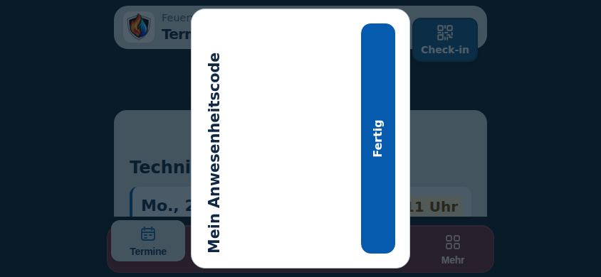
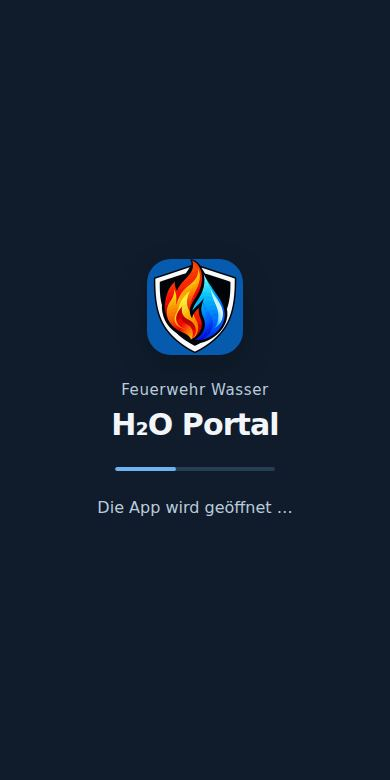
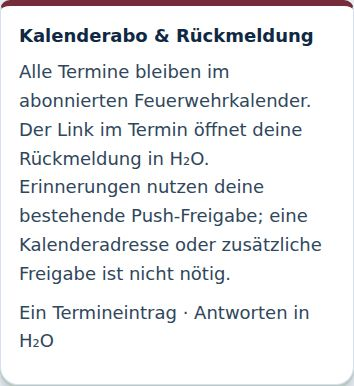
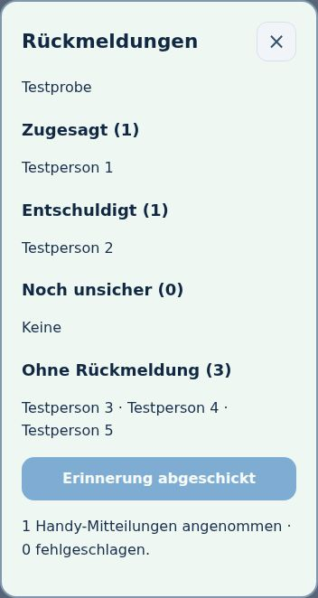
Ein Termin bleibt im bestehenden Kalenderabo; Zu- und Absage erfolgen in H₂O, nicht über native Kalender-Schaltflächen. Das öffentliche Abo, gespeicherte H₂O-Antworten und Berichte bleiben erhalten. Eine persönliche Kalenderadresse ist nicht erforderlich. Für Erinnerungen reicht die vorhandene Push-Freigabe aus. Den persönlichen Abo-Link nicht weitergeben: Er erlaubt das Lesen der eigenen Termine, aber keine Anmeldung und keine Antwort. Unter Daten und Sicherheit lässt er sich zurücksetzen. Danach den neuen Link abonnieren und das alte Abo entfernen; bereits gespeicherte Kopien werden nicht vom Gerät gelöscht. Keine zusätzliche ICS-Datei importieren.
Nachweise unter Status prüfen
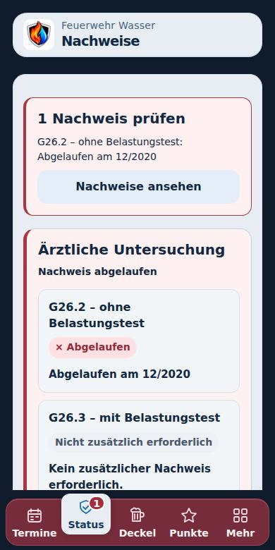
- Status öffnen
Unten „Status“ antippen. In der Ansicht „Nachweise“ stehen die für dich relevanten ärztlichen Nachweise und gegebenenfalls Atemschutz- oder Führerscheinkontrollen.
- Gültigkeit lesen
„Gültig“, „Bald fällig“ und „Nachweis fehlt“ erklären den Stand. Hinweise auf bald fällige, abgelaufene oder fehlende Nachweise erscheinen ausschließlich in dieser Nachweisansicht. Eine durch gültige G26.3 abgedeckte G26.2 steht als kurze Hinweiszeile darunter. Das Datum des letzten Abgleichs und die Vorwarnfrist stehen darunter in getrennten Zeilen.
- Fehler oder neue Nachweise melden
Die angebotene Aktualisierung nutzen, soweit sie für deinen Nachweis vorgesehen ist. Andernfalls die Verwaltung um Prüfung bitten.
Es werden Nachweis- und Gültigkeitsangaben angezeigt, keine ärztlichen Befunde. Die Übersicht ersetzt keine persönliche Einsatzfreigabe.
Mein Deckel: buchen und bezahlen
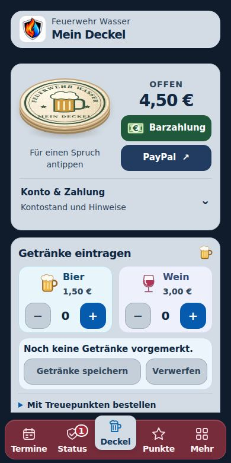
- Deckel öffnen
Unten „Deckel“ antippen. Oben steht der offene Betrag. Bei ausgeglichenem Konto erscheint „Barzahlung“ dezent; Vorauszahlungen bleiben möglich. Barzahlung und PayPal führen zu den verfügbaren Zahlungswegen.
- Menge prüfen
Mit + Bier oder Wein vormerken, mit − korrigieren. Die Menge ist zunächst nur ausgewählt.
- Getränke speichern
„Getränke speichern“ wählen und die Bestätigung abwarten. Bei unklarem Speicherstatus „Speicherung erneut prüfen“ verwenden, statt die Buchung neu einzugeben.
Bargeld zuerst in die Kasse legen. PayPal wird nach Prüfung gutgeschrieben. Treuepunkte sind von Geldguthaben getrennt; sie stehen unter „Punkte“. Die persönliche Deckelansicht zeigt keine Buchungshistorie.
Weitere Funktionen und Sicherheit
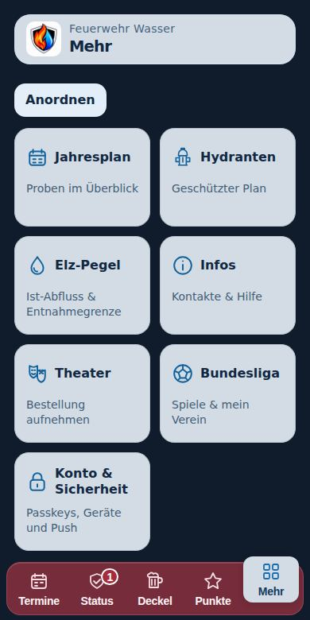
- Mehr öffnen
Unten „Mehr“ wählen. In der Standardanordnung stehen zuerst die Feuerwehrthemen: Ausbildung, Jahresplan, Atemschutz (bei berechtigtem Zugang), Hydranten, Dienstvorschriften, Elz-Pegel und Infos. Unter „Ausbildung“ → „Funk“ findest du die drei Kacheln Funkgerät, FMS-Status und Funkbeispiele. Funkgerät erklärt die Displayangaben an neu gezeichneten Geräteansichten. Die Rufgruppen sind Beispiele aus Wasser. Die allgemeine Motorola-Taschenkarte lässt sich optional vergrößern; ihre Gerätevarianten können abweichen. FMS-Status erklärt die Statuswerte 0–9. Funkbeispiele zeigt fiktive Übungsdialoge für Florian EM 5/42 (LF10), 5/47 (TSF) und 5/100 (Gerätehaus Wasser) mit der Leitstelle Emmendingen. Einmal online vollständig laden; danach sind Ausbildung, Hilfe und die FwDV-Grundauswahl offline verfügbar. Schon vor der Anmeldung öffnet „Ausbildung & Hilfe ohne Anmeldung“ ausschließlich öffentliche Inhalte. Der Speicherstand steht darunter. Rückmeldungen, Anmeldung, Kontostand, Abgleiche und Live-Dienste benötigen Internet. „Dienstvorschriften“ erkennst du am Paragrafzeichen (§). Im Suchfeld nach Nummer oder Titel suchen, zum Beispiel „FwDV 7“, „Atemschutz“ oder „Leitern“. Das Suchfeld leeren, um wieder alle Vorschriften zu sehen. Dann eine FwDV auswählen und mit „Als Buch öffnen“ bildschirmfüllend lesen. Mit Wischen oder den Pfeilen blättern, über „Seite“ direkt springen. Mit zwei Fingern oder +/− zoomen; vergrößerte Seiten mit einem Finger verschieben. „Ganze Seite“ setzt den Zoom zurück. „Fertig ד führt zur Sammlung zurück. Die FwDV-Grundauswahl wird lokal für die Offline-Nutzung vorbereitet. Noch fehlende Unterlagen einmal online vervollständigen. Bei einem Ladefehler „Erneut laden“ oder „Original-PDF öffnen“ verwenden. Das Datum bezeichnet die Aktualisierung der offiziellen Quelle, nicht zwingend das Ausgabedatum. Danach folgen Theater und Bundesliga; „Konto & Sicherheit“ steht am Ende. „Elz-Pegel“ zeigt den Grenzwert zur Wasserentnahme und verlinkt den maßgeblichen Tagesmittelwert. Verfügbare Kacheln hängen von deinem Zugang ab. Unten bleiben alle Beschriftungen einzeilig. Verschobene Funktionen verwenden dort kurze Namen: Plan, AGT, Hydr., Elz, Infos, Theater, Fußball oder Konto. Unter „Mehr“ stehen die vollständigen Titel. Die blauen Symbole stehen direkt neben den Kacheltiteln; die Beschreibung folgt darunter. Atemschutz wird durch eine Feuerwehr-Atemschutzmaske dargestellt. Die einzelnen Mitgliederkarten haben eine neutrale Oberkante. Die seitliche Statusfarbe und die Hinweise zu den Nachweisen bleiben erhalten. Auf schmalen Handys stehen die Kacheln untereinander. Mit „Anordnen“ öffnest du die Menüverwaltung mit Anleitung und Zurücksetzen.
- Zugang schützen
Unter „Konto & Sicherheit“ Passkeys, Passwort und die angemeldeten Geräte verwalten. Dort lädt „Daten aktualisieren“ persönliche Portaldaten neu und prüft auf eine neue App-Version. Der allgemeine Aktualisieren-Button entfällt aus dem Kopfbereich; automatische Abrufe und Hinweise auf neue Versionen bleiben aktiv. Bei Verlust die Feuerwehrverwaltung informieren.
- Mitteilungen und Startbildschirm
Unter „Konto & Sicherheit“ Push aktivieren. Auf iPhone/iPad H₂O dafür über das Home-Bildschirm-Symbol öffnen. „Gerätelimit erreicht“ bedeutet fünf gespeicherte Push-Verbindungen: „Push-Verbindungen zurücksetzen“ bestätigen und dieses Gerät erneut aktivieren. Auf anderen eigenen Geräten muss Push danach ebenfalls neu aktiviert werden; Anmeldung und Daten bleiben erhalten.
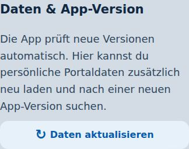
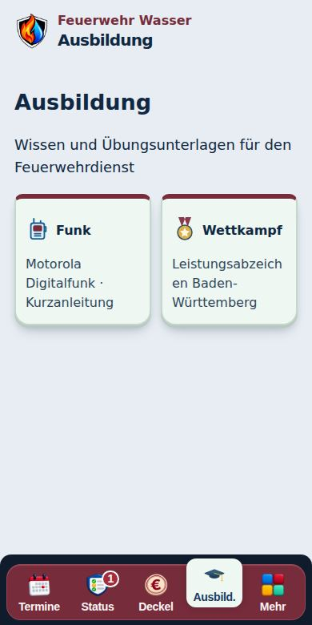
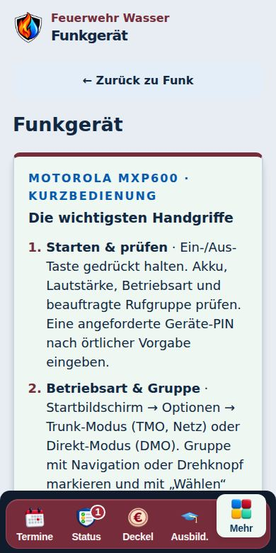
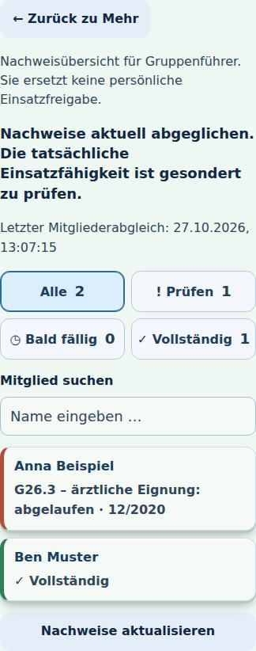
Persönlich angepasste Anordnungen bleiben erhalten. Mit „Anordnen“ → „Standardanordnung wiederherstellen“ unter „Mehr“ lässt sich die neue Reihenfolge übernehmen. Der Inhaltsbereich hat einen durchgehenden, hellen Hintergrund in Blaugrau. Die normalen Karten sind einheitlich in dem angenehmen Hellgrün der gültigen Nachweise gehalten. Innere Leseflächen nutzen einen etwas helleren Grünton. Gelbe und rote Warnungen sowie Rückmeldefarben behalten ihre Bedeutung. Einzelne Karten heben wichtige Inhalte hervor. Nachweise stehen direkt als farblich gekennzeichnete Gruppen auf dieser Fläche. Die Portaltexte sind für gute Lesbarkeit aufbereitet: Fließtexte werden mit 18 px Grundgröße angezeigt, unterstützende Hinweise in der Regel mit mindestens 16 px. Die iOS-Systemschriftgröße und die Textvergrößerung des Browsers werden berücksichtigt. Vergrößerte Schrift und Datumsangaben dürfen umbrechen; alle Inhalte bleiben durch Scrollen erreichbar. Der Kopfbereich und die obere Seitenbasis sind einheitlich hell. Zum oberen sicheren Bildschirmrand bleibt zusätzlicher Abstand für das Wappen und den Schriftzug. Der Kopfbereich geht ohne separate Karte in die helle Inhaltsfläche über. Links stehen das freigestellte H₂O-Wappen ohne farbige Hintergrundkachel, der gut lesbare bordeauxrote Schriftzug „Feuerwehr Wasser“ in kräftigerer Schrift und der Seitentitel. Diese stehen auf allen Seiten gleich hoch; rechts bleibt der große Check-in. Unter „Mehr“ stehen Symbole neben den Titeln und die Kurzbeschreibungen darunter. Auf schmalen Bildschirmen wechseln die Kacheln in eine Spalte, damit die Bezeichnungen lesbar bleiben. Die bordeauxrote Navigation liegt auf einem dunkelblauen Fußbereich mit abgerundeten oberen Ecken. Der Fußbereich bleibt seitlich und unterhalb der Navigation dunkelblau; in der iPhone-App setzt sich die Farbe bis zum Home-Indikator fort. Gedämpfte Grün-, Creme- und Lilatöne kennzeichnen die Terminantworten. Die untere Menüleiste ist bordeauxrot; die aktive Ansicht ist als helle, leicht über die Leiste angehobene Karte mit blauem Symbol und dunkler Beschriftung markiert. Ein reservierter Abstand hält den Inhalt frei. Der untere Abstand berücksichtigt den Home-Balken des Handys. Der Monat steht rechts oben als kompakter bordeauxroter Monatsreiter mit heller Schrift. Die Farben der Terminkarten und Rückmeldebuttons zeigen weiterhin deinen Antwortstatus. Die Menüleiste kann persönlich angeordnet sein; dann kann eine Funktion unten statt unter „Mehr“ liegen. Zum Anmelden bestätigt dein Gerät den Passkey per Face ID, Fingerabdruck oder Geräte-PIN.
Dienstvorschriften suchen und lesen
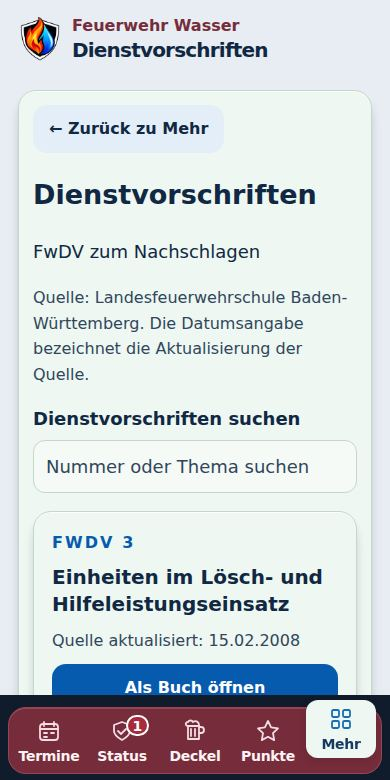
- Sammlung öffnen
Unter „Mehr“ die Kachel mit dem Paragrafzeichen (§) wählen.
- Vorschrift finden
Nach Nummer oder Titel suchen, zum Beispiel „FwDV 7“ oder „Atemschutz“. Ohne Suchtext erscheinen alle hinterlegten Vorschriften in der von der Verwaltung festgelegten Reihenfolge.
- PDF lesen
„Als Buch öffnen“ lädt die Vorschrift in eine bildschirmfüllende Buchansicht. Mit Pfeilen oder Wischen blättern, mit dem Seitenfeld direkt zu einer Seite springen. Zwei Finger oder +/− vergrößern und verkleinern; eine vergrößerte Seite mit einem Finger verschieben. „Ganze Seite“ passt die Seite wieder ein. „Fertig ד schließt das Buch und erhält den Suchbegriff. Bei einem Ladefehler erneut laden oder das Original öffnen.
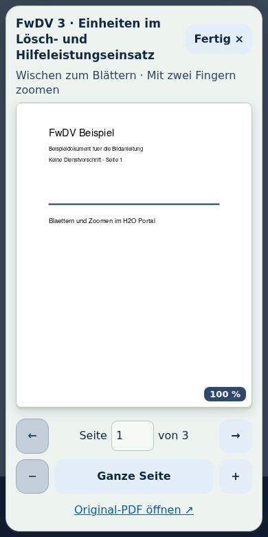
Die Grundauswahl kann nach vollständiger Vorbereitung offline gelesen werden. Weitere Quellen benötigen Internet. Die Datumsangabe ist der Aktualisierungsstand der Quelle. Die Sammlung ist eine Nachschlagehilfe.
Bundesliga und Pokal verfolgen
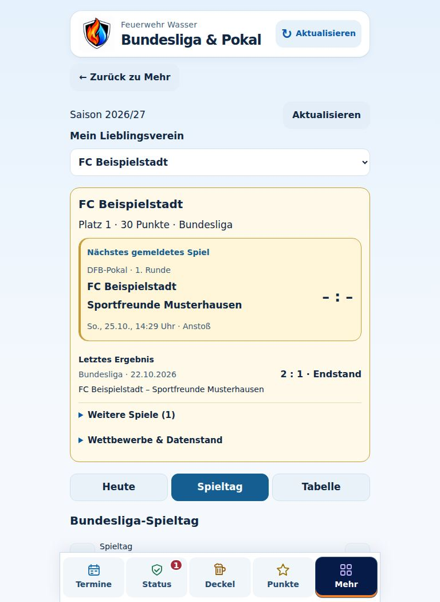
- Lieblingsverein wählen
Unter „Mehr“ die Kachel „Bundesliga“ öffnen und deinen Verein auswählen. Die Auswahl bleibt auf diesem Gerät gespeichert. Oben stehen Tabellenplatz, nächstes gemeldetes Spiel und letztes gemeldetes Ergebnis. Weitere Spiele lassen sich aufklappen.
- Wettbewerbe prüfen
Beim Lieblingsverein werden zusätzlich DFB-Pokal, Champions League, Europa League, Conference League und Supercup berücksichtigt, soweit OpenLigaDB Spiele meldet. Unter „Wettbewerbe & Datenstand“ steht, welche Daten verfügbar sind. Fehlende Spiele bedeuten weder Nichtteilnahme noch Ausscheiden.
- Ansicht wechseln
„Heute“ zeigt Bundesliga-Spiele und heutige Pokalspiele deines Vereins. Ohne heutige Spiele öffnet sich der Bundesliga-Spieltag. Mit den Pfeilen oder der Spieltagauswahl wechseln. „Tabelle“ zeigt die Bundesliga-Platzierungen. Die Ansicht lädt automatisch: Spielstände während eines heute angesetzten, noch nicht beendeten Spiels jede Minute, sonst alle 5 Minuten. Tabelle und Spielpläne werden alle 5 Minuten geladen. Der Hinweis oben nennt das Intervall und den letzten erfolgreichen Abruf. Im Hintergrund oder nach Verlassen der Ansicht pausiert die Automatik. „Aktualisieren“ lädt Tabelle und Spiele zusätzlich jederzeit gemeinsam. Tore stehen aufklappbar beim Spiel.
Community-Daten können verzögert oder unvollständig sein. Es gibt keine Live-Spieluhr und keine Live-Tabelle. Verlängerung und Elfmeterschießen werden anhand der gemeldeten Ergebnisse gekennzeichnet. Fußball wird erst beim Öffnen geladen; persönliche Portal-Zugangsdaten werden nicht an OpenLigaDB gesendet.
Jahresplan als PDF
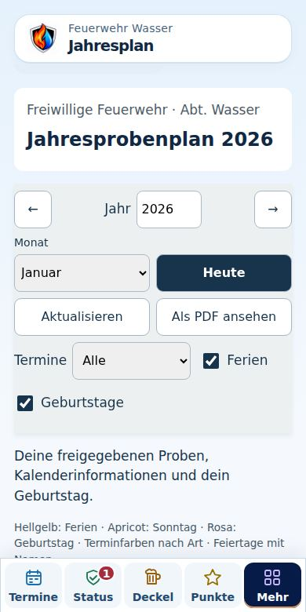
- Direkt öffnen
Unter „Mehr“ auf „Jahresplan“ tippen. Bis die PDF bereit ist, erscheint nur eine kompakte Ladeanzeige. Danach zeigt die PDF deine freigegebenen Termine auf zwei Seiten.
- Lesen
Mit den Pfeilen blättern und mit zwei Fingern zoomen. „PDF öffnen“ übergibt die erzeugte Datei in der iPhone-App an den Systemdialog; dort kannst du sie öffnen, teilen oder in Dateien sichern. „Speichern“ übergibt die Datei ebenfalls zum Sichern. Im Browser wird die PDF geöffnet beziehungsweise heruntergeladen.
- Zurückkehren
„Schließen“ führt direkt zur vorherigen Portalansicht zurück.
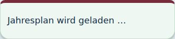
Die PDF ist eine Momentaufnahme. Zum Prüfen von Änderungen den Plan erneut laden. Persönliche Inhalte erfordern deinen Portalzugang.
Verbindung oder persönlicher Zugang funktioniert nicht
Einrichtung und Anmeldung
Android: „H₂O Portal installieren“ öffnet bei Unterstützung den Browserdialog. Sonst im Browser-Menü „Zum Startbildschirm hinzufügen“ wählen. Bei einer Schutzwarnung abbrechen und H₂O im Browser nutzen. iPhone: in Safari „Teilen“ → „Zum Home-Bildschirm“ → „Hinzufügen“. Die schematische Bildanleitung steht beim Installationsschritt. Updates werden automatisch gesucht; offene Eingaben vor dem Neuladen speichern.
Mit Passkey oder Passwort anmelden
Beim Öffnen über den Einrichtungs-QR-Code wird die einmalige Freigabe automatisch übernommen. Du wählst direkt Passkey oder Passwort; keinen Code erneut eingeben. Erst ohne Einrichtungs-QR erscheint die manuelle Freigabe. „Andere Freigabe verwenden“ öffnet bei Bedarf ein leeres Eingabefeld. Der Dienst prüft die Freigabe weiterhin beim Einrichten. Danach folgen Home-Bildschirm und freiwillige Extras. „Bereits eingerichtet“ öffnet die Anmeldung. Zurück ist möglich; optionale Schritte lassen sich überspringen. Mit gültiger Sitzung öffnen sich direkt die Termine. Nach persönlicher Identitätsprüfung gibt die Verwaltung einen einmaligen Einrichtungscode frei. Entweder „Passkey einrichten“ wählen oder „Zugang mit Passwort einrichten“ öffnen und selbst Benutzername sowie Passwort festlegen. Du wählst dein Passwort frei, ohne Mindestlänge und ohne Pflicht für Sonderzeichen, Zahlen oder Großbuchstaben. Leerzeichen, Einfügen und Passwortmanager sind erlaubt. Die Getränke-PIN ist kein Anmeldepasswort. Beide Anmeldearten öffnen dasselbe Mitgliedskonto und gelten auch für persönliche Terminlinks. Bei Verlust die Verwaltung um eine neue Freigabe bitten. Sie kann dein Passwort nicht auslesen. „Auf diesem Gerät abmelden“ beendet nur diese Sitzung; „Andere Geräte abmelden“ verlangt eine erneute Bestätigung. Eine Passwortänderung meldet alle bisherigen Passwortsitzungen ab; Passkeys bleiben bestehen.
Konto & Sicherheit
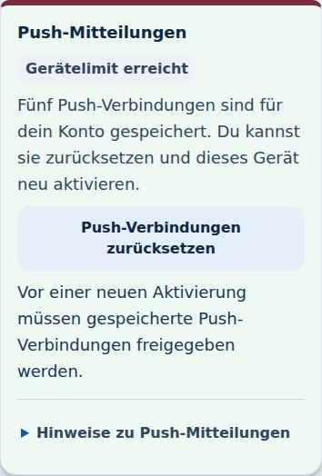
Push-Mitteilungen und Daten aktualisieren stehen direkt bereit. Die persönliche Kalenderanbindung sowie Anmeldung und Geräte haben aufklappbare Einstellungen. Alle Bereiche sind als einheitliche einzelne Karten gestaltet. Bei fünf gespeicherten Push-Geräten erscheint „Push-Verbindungen zurücksetzen“. Die Bestätigung beendet Push auf deinen bisherigen Geräten; anschließend einzeln neu aktivieren. Portal-Anmeldung und Daten bleiben erhalten.
Keine Verbindung?
Den Datenstand beachten. Bei einem Ladefehler „Erneut versuchen“ wählen. Unter „Mehr“ → „Konto & Sicherheit“ steht zusätzlich „Daten aktualisieren“. Bei unklarem Speicherstatus denselben Vorgang über „Speicherung erneut prüfen“ kontrollieren, statt Getränke oder Zahlungen neu einzugeben.
Vom TestFlight-Test zum Webportal
Die native iPhone-App wird nicht weitergeführt. H₂O in Safari oder Chrome öffnen und mit dem vorhandenen Passkey oder Passwort anmelden. Ein neues Konto ist nicht erforderlich. Danach kann die TestFlight-App entfernt werden. Das Home-Bildschirm-Symbol ist freiwillig.
Zugang verloren oder Daten falsch?
Die zuständige Feuerwehrverwaltung kontaktieren. Sie kann den Zugang prüfen, alte Zugänge sperren und eine neue Zugangseinrichtung freigeben. Browserdaten löschen oder das Startbildschirm-Symbol entfernen löscht keine bestätigten Daten beim Dienst.
Version 2026.10.28.9
Auf dem Home-Bildschirm speichern
Mit dem H₂O-Symbol hast du Termine und deinen Deckel immer griffbereit.
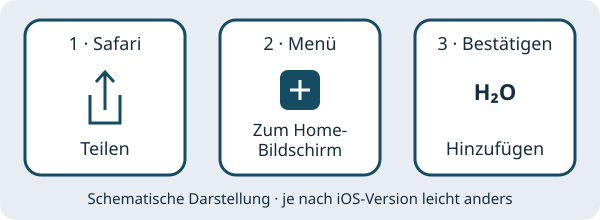